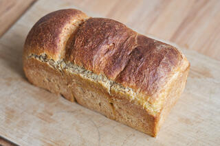
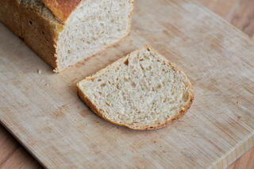
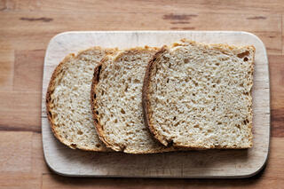
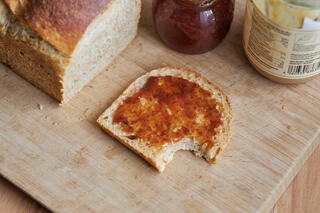
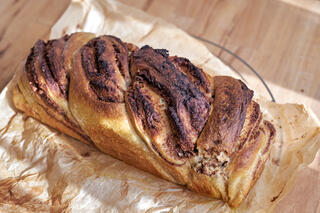

Gesunde Rezepte für Sauerteigbrot und Weiteres
Brioche wird klassischerweise mit Hefe zubereitet. Da ich nie frische Hefe zuhause habe, habe ich ein Rezept mit Sauerteig entwickelt. Das Ergebnis ist ein superweiches, leicht süßes Brot, das an Hefezopf erinnert, aber viel aromatischer und lockerer ist. Eine bessere Version des Hefezopfs also. Das Rezept ist mein Standardrezept für hefefreien Hefeteig. Ich verwende ihn für Brioche, Zimtschnecken, Nusszopf, Blechkuchen, Buchteln, was auch immer. Wichtig ist aber: er braucht Zeit. Das ist aber gut so, finde ich. Anstatt des Weizenmehls funktioniert auch Dinkelmehl Type 630.
 Vortag: Morgens
Alle Zutaten für den Vorteig mischen und 5-8 Stunden gehen lassen, je nach Aktivität des Sauerteigs und Temperatur. Alle Zutaten für das Kochstück in einen kleinen Topf gehen und unter ständigem Rühren bei mittlerer Hitze zu einem dicken Pudding einkochen. In ein kleine Schraubglas füllen und abgedeckt abkühlen lassen.
Vortag: Nachmittags
Wenn der Sauerteig bereit ist, alle Zutaten für den Hauptteig bis auf die Margarine und Wasser mit einer Küchenmaschine 2-3 Minuten verkneten. Wenn der Teig zu trocken erscheint, tröpfchenweise noch etwas Wasser dazugeben. Dann nach und nach die Margarine unterkneten. Der Teig sollte am Ende sehr weich, aber geschmeidig und glatt sein. Den Teig nun abgedeckt bei Raumtemperatur 2-4 Stunden gehen lassen, währenddessen 2-3 mal vorsichtig und mit feuchten Händen dehnen und falten. Die Zeit hängt auch hier wieder von mehreren Faktoren ab, also den Teig beobachten und nach Gefühl entscheiden. Der Teig sollte mehrklich aufgegangen sein.
Nun muss entschieden werden, was der Teig mal werden soll. Für eine Brioche den Teig in drei gleichgroße Stücke einteilen (je etwa 300 g) und einzeln zu staffen Kugeln formen. Nebeneinander in eine gefettete Kastenform setzen (meine ist etwa 20 cm lang).
Für Zimtschnecken oder einen Nusszopf empfehle ich, den Teig für ein paar Stunden in den Kühlschrank zu geben, dann lässt er sich besser verarbeiten. Nach der Ruhezeit den Teig auf eine leicht bemehlte Arbeitsfläche geben und mit ebenfalls bemehlten Händen zu einem Rechteck von etwa 40 mal 50 cm ausbreiten. Die gewünschte Füllung auf dem Teig versteichen und zu einer Rolle aufrollen. Die Rolle in Backpapier einwickeln und für etwa 30 Minuten einfrieren. Dies hilft beim Einteilen. Danach für Zimtschnecken in Scheiben schneiden, für den Nusstopf längs halbieren und die Stänge verzwirbeln. Zimtschnecken auf ein Backblech setzen, den Nusszopf in eine Kastenform (30 cm) legen.
Den geformten Teigling in jedem Fall nun über Nacht im Kühlschrank bei 5 Grad gehen lassen.
Backtag: Am nächsten Morgen
Am nächsten Morgen den Ofen 30 Minuten auf 230 Grad aufheizen. Die Brioche (oder was aus dem Teig geworden ist) mit der Eistreiche bepinseln, in den Ofen stellen und bei 190 Grad 60 Minuten (Zimtschnecken nur etwa 25-30 Minuten) backen. 5 Minuten in der Form abkühlen lassen und dann auf einem Gitter so lange abkühlen lassen, wie man es aushält. 😉
 